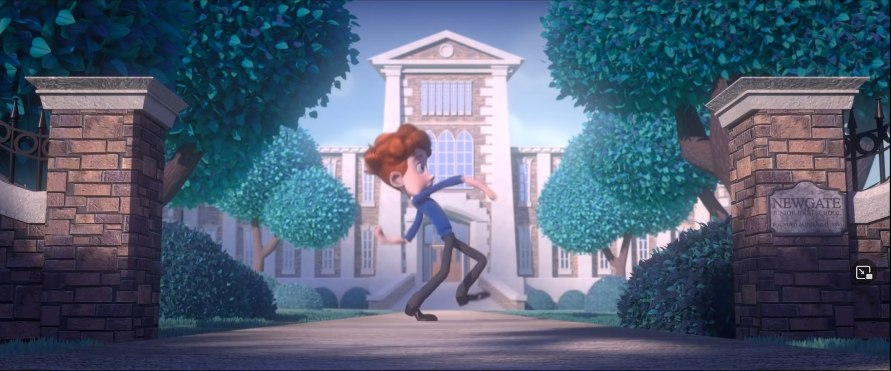
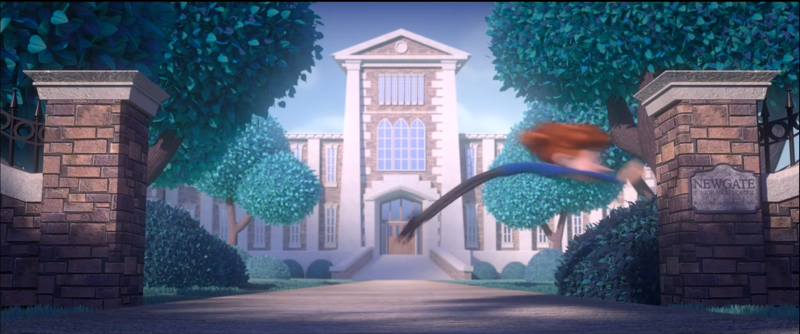
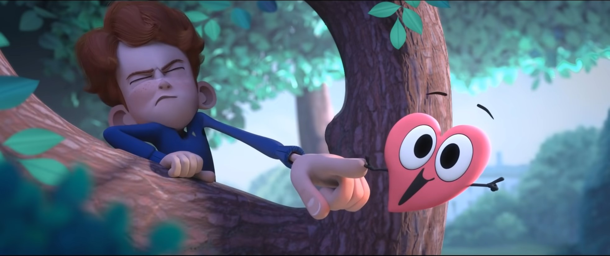
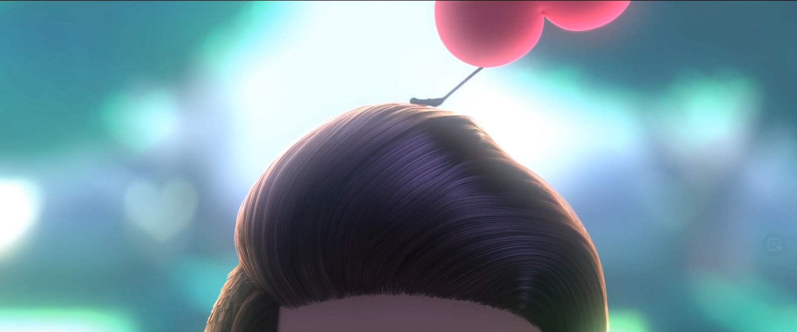
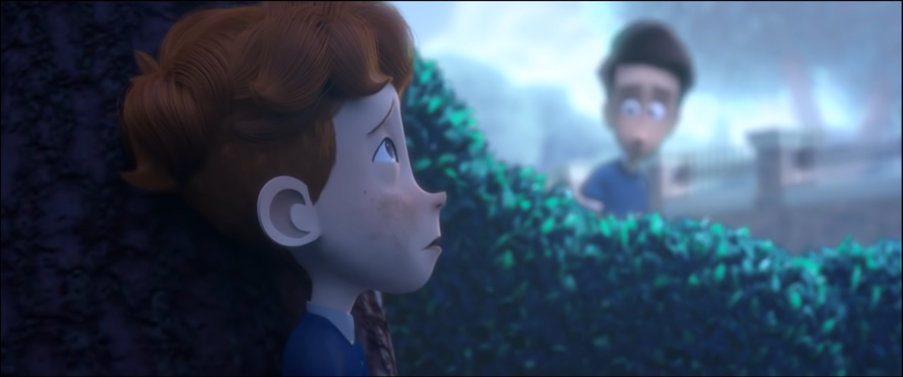

Hier war die Aufgabe gestellt, in einer beispielhaften Animation alle 12 Principles of Animation ausfindig zu machen.
Choose your Fighter!
Svenja Riebesel
Diese Prinzipien sind anhand des Kurzfilms: "In a Heartbeat" aufgezeigt und erklärt.
An diesem Beispiel kann man das Prinzip der Aniticipation erkennen. Durch die schleudernde Bewegung zum Schwungholen erkennt man, dass der Charakter zum Sprung ausholt. Durch das lange Ausholen legt es die Aufmerksamkeit darauf, was gleich passieren wird. Das Prinzip der Secondary action ist durch das herumschleudern der Arme zu erkennen. Nicht nur die Beine bewegen sich für den Sprung, sondern auch die Arme holen mit aus. Zudem ist das Prinzip der Exaggeration zu erkennen. Die ausholende Bewegung wird übertrieben um, sie zu verdeutlichen.
Hier ist die Form der Bewegung zu erkennen. → Arcs. Der Sprung ist bogenförmig, außerdem wird das Squash and Stretch Prinzip angewendet. Der Charakter wird über seine normale Größe hinweg gestreckt, um zu verdeutlichen wie schnell der Bewegungsablauf stattfindet.
Hier ist das Prinzip des Stagings zu erkennen. Um die Idee zu vermitteln, dass sein kleines Herz, trotz seiner Größe, so sehr an ihm zieht, dass der Charakter sich mit all seinem Gewicht dagegenlehnen muss.
Hier spielt das Timing eine große Rolle. Da die gesamte Szene in Zeitlupe abgespielt wird, kann hier eine sehr schnell stattfindende Bewegung eindeutig gezeigt werden.
Um das Follow-through Prinzip zu verfolgen ziehen die Haare hier nach der Bewegung hinterher und bewegen sich beim Loslassen in die engegengesetzte Richtung.
Um den Charakter im Raum darzustellen und dem Zuschauer seiner Position und der Pespektive im Raum klar zu werden, wird das Prinzip des Solid drawing angewendet.
Bei all diesen Beispielen ist auch das Slow-In-And-Out Prinzip zu erkennen. Bewegungsabläufe sind zu Beginn und am Ende etwas langsamer als währenddessen. Zudem wird auf den Appeal geachtet. Es werden nur wenige Details verwendet, aber diese werden entsprechend in Szene gesetzt. Das Straigth-ahead Prinzip ist in diesem Film nicht / weniger zu finden, da es stets Übergänge zwischen den Posen gibt.
Sandro Poppe
1.Squash and Stretch
.png)
Bei diesem Prinzip geht es darum das Objekt während einer Bewegung zu stauchen oder zu strecken um dem Objekt Gewicht und Masse zu verleihen. Im Beispiel werden die Füße von Olaf gestreckt und gestaucht während er sich bewegt.
2.Anticipation
.png)
Bei Anticipation geht es darum die Hauptbewegung durch eine davor auftretende Gegenbewegung einzuleiten. Im Beispiel drückt Olaf sich nach unten bevor er springt.
3.Staging
Bei diesem Prinzip geht es darum die Aufmerksamkeit des Zuschauers durch die Umgebung, die Kameraposition oder das Timing zu leiten.
4.Straight ahead & pose to pose
Hierbei geht es um die 2 verschiedenen Animationstechniken: entweder frame by frame jeden frame nacheinande zeichnen, oder unterschiedliche posen zu zeichnen und dann die Bewegungen dazwischen aufzufüllen.
5.Overlapping Actions
.png)
Hierbei geht es darum eine Nebenbewegung einzuführen die meistens von der Hauptbewegung beeinflusst ist bzw darauf folgt, im Beispiel bewegen sich die "Ohren" von olaf nachdem er seinen Kopf bewegt hat.
6.Slow in and Slow out
.png)
Um der ganzen Animation mehr realismus zu geben haben Objekte nicht direkt ihre maximal Gewschwindigkeit erreicht sondern starten langsam und werden immer schneller, und bremsen andersrum auch langsam ab und nicht "instant". Im Beispiel rennt Olaf langsam los , und bremmst dann auch wieder langsam ab.
7.Arcs
.png)
Bewegungen in der Natur sind meistens eher durch wiederholende Kreisbewegungen gekennzeichnet anstatt einfach gerade Bewegungen. Im Beispiel bewegen sich die kleinen Schneemännchen zwar in einer Linie nach links, hüpfen dabei aber immer leicht nach oben und bilden so eine sich wiederholende Halbkreisbewegung.
8.Secondary Action
.png)
Dabei geht es darum eine sekundäre Animation zu haben die die Hauptanimation unterstüzt bzw. ergänzt. Im Beispiel bewegt sich der "Schwanz" von Olaf hin und her während der Hauptfokus auf einer anderen Bewegung liegt.
9.Timing
Bei Timing geht es darum, wann die Konsequenzen von Aktionen auftreten bzw. was wann aufeinander folgt.
10.Exaggeration
Übertreibungen hinterlassen einen stärkeren Eindruck auf den Zuschauer.
11.Solid Drawing
Dabei geht es darum den Charakteren oder Objekten 3-dimensionales Aussehen zu geben und diese richtig im Raum zu plazieren.
12.Appeal
Hierbei soll man den Objekten oder Charakteren ein bestimmtes Aussehen geben damit sie ansprechender auf den Zuschauer wirken.
Lukas Rapp
Hier wurden am Beispiel des ITFS-Trailers alle Principles aufgezeigt.
Teils ist es schwierig, für Principles wie "Appeal" ein passendes Beispiel zu finden, da es oft sehr subjektiv und vage definiert ist.